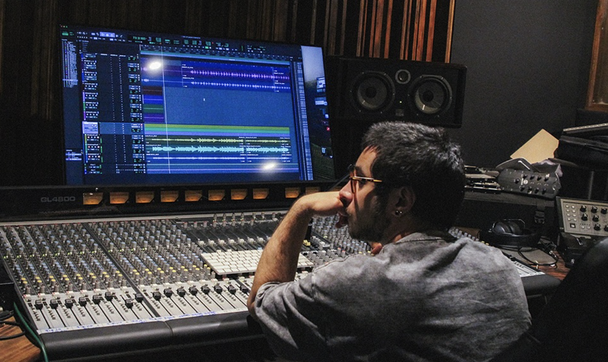
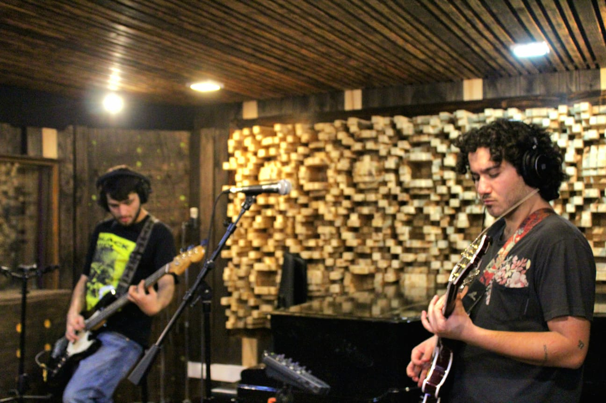
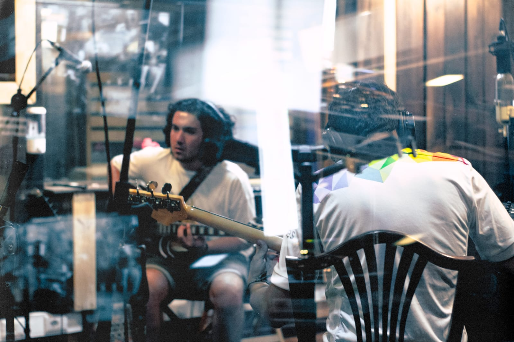
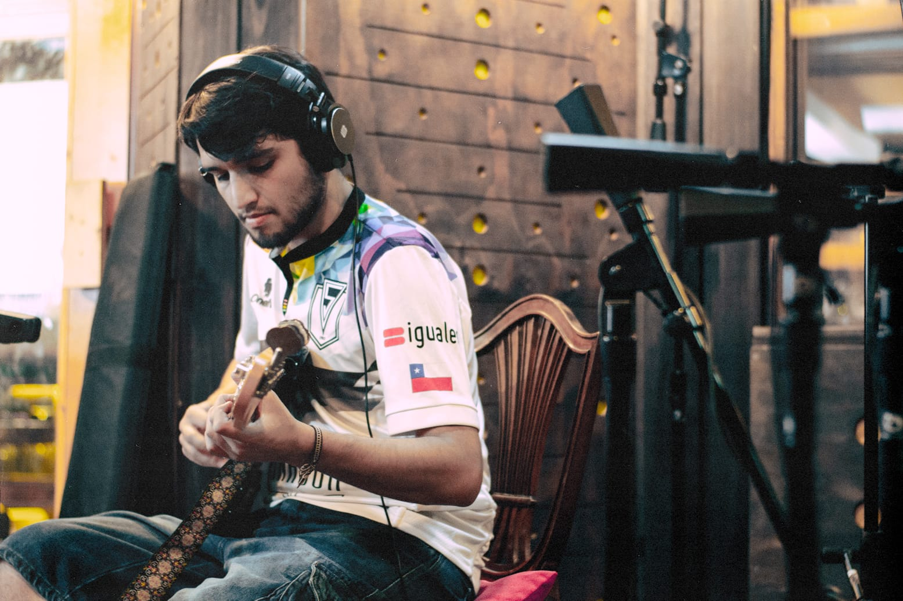
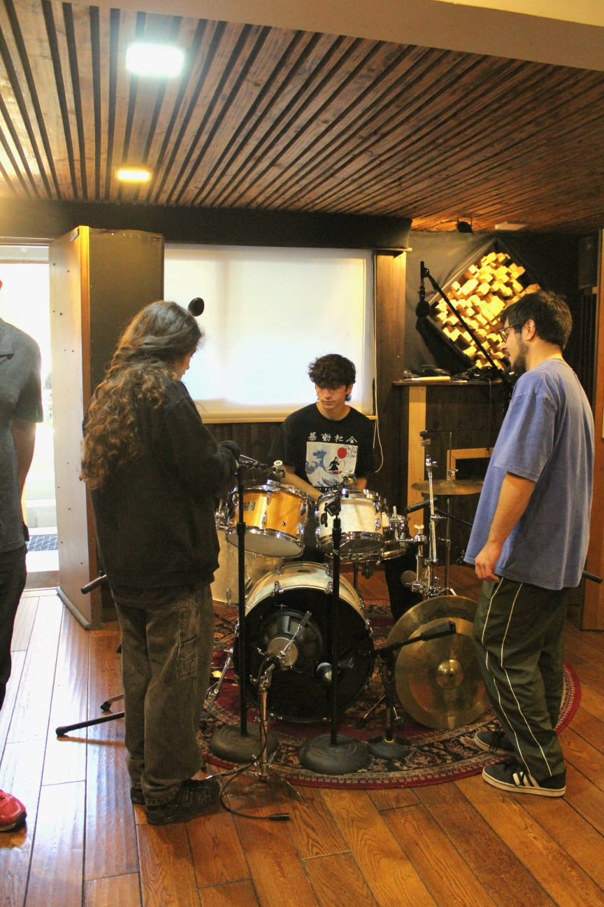
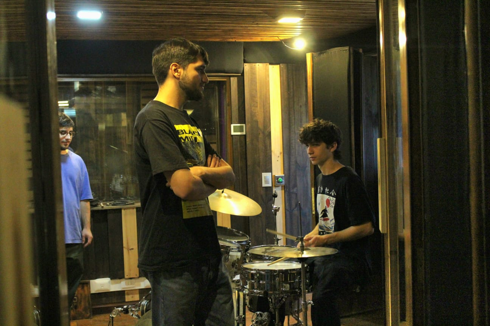
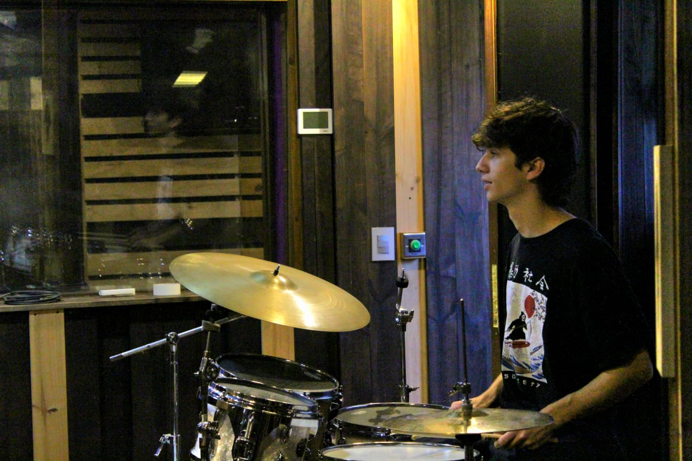
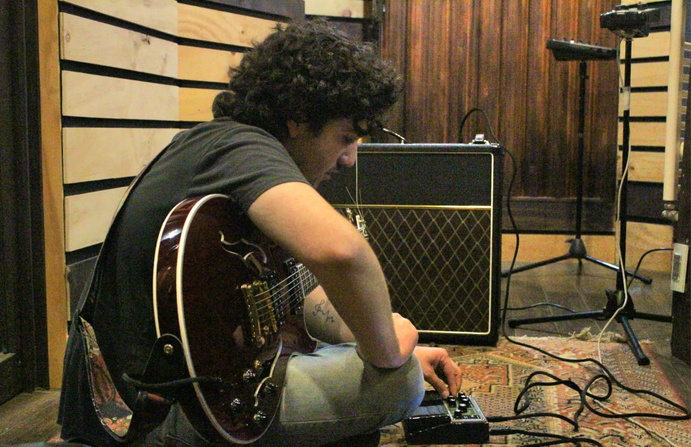

Qué hago
Si estás partiendo, esto es lo que significa cada etapa — de la idea al master.
Grabar
Capturo tu música en el estudio: voces, instrumentos y tomas, con micrófonos y equipo profesional para que el audio nazca limpio.
Editar
Limpio y ordeno lo grabado: corrijo tiempos, quito ruidos y dejo cada pista lista para trabajar.
Mezclar
Equilibro la canción: volúmenes, paneos, ecualización y efectos, para que cada elemento ocupe su lugar.
Masterizar
El toque final: preparo el audio para que suene parejo y con el volumen correcto en Spotify, vinilo o donde lo publiques.
Trabajos
Algo de lo que he grabado, mezclado y masterizado. Cada tema indica mi rol.
Corriente Continua — Si grito
Grabación, edición, mezcla y master
Corriente Continua — Encuentro con un Hada
Grabación, edición, mezcla y master
La Bluessy Jazz — El Son Funkeao
Grabación, edición, mezcla y master
Dispersxs — Pinturas y Comisuras
Guitarra lead, grabación y edición
Créditos en plataformas
Mi nombre aparece en los créditos de las plataformas donde se publica la música.

En el estudio
Un vistazo a mi espacio de trabajo.








Sobre mí
Soy Luca Biotti, sonidista. Grabo, edito, mezclo y masterizo música para artistas y proyectos, trabajando cada canción como un caso único — sin plantillas ni recetas, buscando el sonido que le calza a tu música.
Mi foco son los resultados a medida de cada artista. Cuéntame tu idea y la llevamos desde la primera toma hasta el master final.
Formación
- Técnico en Sonido Duoc UC
- Masterclass de Mezcla GMasters · Primera generación
Hablemos de tu proyecto
Cuéntame qué tienes en mente y te respondo con una idea de cómo trabajarlo. Sin compromiso.